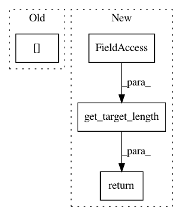

f5278f68882ebf89a013611c86eb20345e723df2,pytext/models/seq_models/seq2seq_model.py,Seq2SeqModel,forward,#Seq2SeqModel#Any#Any#Any#Any#,164
Before Change
if dict_feats:
(
output_dict["dict_tokens"],
output_dict["dict_weights"],
output_dict["dict_lengths"],
) = dict_feats
After Change
src_embedding_list.append(
create_module(config.dict_embedding, tensorizer=gazetteer_tensorizer)
)
contextual_token_tensorizer = tensorizers.get("contextual_token_embedding")
if contextual_token_tensorizer:
src_embedding_list.append(
create_module(
config.contextual_token_embedding,
tensorizer=contextual_token_tensorizer,
)
)
source_embedding = ScriptableEmbeddingList(src_embedding_list)
trg_tokens = tensorizers["trg_seq_tokens"]
target_embedding = ScriptableEmbeddingList(
[create_module(config.target_embedding, tensorizer=trg_tokens)]
)
model = create_module(
config.encoder_decoder,
src_tokens.vocab,
source_embedding,
In pattern: SUPERPATTERN
Frequency: 3
Non-data size: 4
Instances
Project Name: facebookresearch/pytext
Commit Name: f5278f68882ebf89a013611c86eb20345e723df2
Time: 2020-04-15
Author: twild@fb.com
File Name: pytext/models/seq_models/seq2seq_model.py
Class Name: Seq2SeqModel
Method Name: forward
Project Name: interactiveaudiolab/nussl
Commit Name: c64fb9aeaf3e78faded688f8fa1b3097dd70b470
Time: 2019-07-07
Author: prem@u.northwestern.edu
File Name: nussl/deep/datasets/base_dataset.py
Class Name: BaseDataset
Method Name: populate_cache
Project Name: interactiveaudiolab/nussl
Commit Name: c64fb9aeaf3e78faded688f8fa1b3097dd70b470
Time: 2019-07-07
Author: prem@u.northwestern.edu
File Name: nussl/deep/datasets/base_dataset.py
Class Name: BaseDataset
Method Name: _get_item_helper